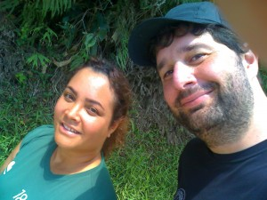
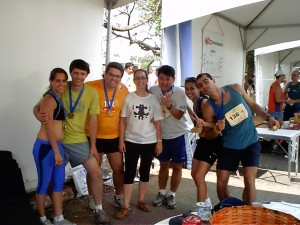

vamo, vamo, vamo…
Posts tagged 10 conselhos
Consiga um parceiro para treinar junto – 2
37 years
by Alecão
in Ex-sedentário
Este é um dos conselhos do Karnazes. E meu parceiro de fato era até bem pouco tempo, em presença de espirito, nas ligações, no SMS, nos comentários no blog: Meu irmão/primo Claudião.
Mas fui abençoado com uma nova parceira de treinos: Minha Moça.
Ela vem bem motivada e tem me dado uma nova visão em relação aos treinos.
Adoro ser o incentivador nos treinos aos sábados, quando fazemos juntos. E ela corresponde e presta a atenção em tudo.
Agora tenho a felicidade de ter um treino por semana acompanhando alguém. Conversar sobre o assunto de corrida, sobre motivações, sobre com ser mais feliz.
Claudio, não fique com ciúmes. Sabe que adoro treinar com você, mas a distância e compromissos não permitem os treinos com tanta frequência.
Moça, que continue neste passo para sempre, os seus objetivos serão alcançados e os meus também. Agora tem uma parceira que logo logo chegará ao mesmo nível e quem sabe até me superará, pois ainda sou uma tartaruga neste esporte.
Finalizando: Karnazes manja tudo!
Voltando novamente
38 years
by Alecão
in Ex-sedentário
Desde a última corrida de 6Km, tenho estado estático. Com apenas um treino que foi feito fora de casa com o apoio do Claudião.
Acho que estas recaídas são comuns no começo e tem a ver com o fato de tentar vencer a batalha contra a ansiedade. Mas podem contar comigo novamente falando de meus treinos.
Não é a primeira vez que tenho uma recaída. Em 9 de outubro isso também aconteceu e recorri ao que já esta virando um mantra pra mim: “Se você perder um treino ou fraquejar, não é o fim do mundo. Não desista.” proferido por Karnazes.
Apenas hoje consegui ler, comentar e arrumar tempo para escrever sobre minha caminhada de segunda feira. Depois do trabalho, o Edgar que trabalha comigo, me deu carona até São Caetano e de lá eu deveria pegar um ônibus para minha casa. Pensei, por que não ir a pé? E fui como mostrado neste link do MapMyRun: Mapa do trajeto.
Foram 4,5 Km de caminhada com roupa e sapato social. Mas serviu para dar um start na pausa. E que venham os treinos novamente.
Este treino é como uma resposta antecipada ao desafio proposto pelo Claudião. Saiba que adorei o desafio, acertou em cheio naquilo que estou precisando. Um empurrãozinho. Mas vou encarar o desafio como um treino de trote de pelo menos 20 minutos a se realizar ainda esta semana.
Consiga um parceiro para treinar junto
58 years
by Claudião
Ontem era um daqueles dias em que a cabeça quer treinar, mas o corpo reclama por ter ficado 6 dias sem correr só comendo doces. Eu iria treinar de qualquer forma, mas daquele jeito…
Eis que descendo a rua de casa, meu vizinho, o Japa (Fábio Hashimoto) estava na calçada e me disse que seu fosse trotar que ele iria junto.
Mas é claro!
O treino que tinha tudo para ser um fiasco foi muito bom. Sete quilômetros e meio sem repetir o percurso e o Japa, que não fez inscrição em nenhuma corrida porque se dizia despreparado, subia as ladeiras se segurando para não me deixar pra traz.
Combinamos de treinar uma vez por semana juntos. Vamos ver. Treinar com o Japa tem um diferencial ímpar. Como é skatista desde que as rodas de tal equipamento eram quadradas, tem uma flexibilidade nota mil e me obriga a alongar corretamente, e muito. Um verdadeiro personal nesse quesito. Apesar de morarmos na mesma rua, só depois de três meses ensaiando, que a gente conseguiu fazer o tão prometido treino juntos. O Japa é daqueles que não precisa fazer treino específico para poder participar de provas como as que participamos. Além de skatista também usa a bike como meio de transporte até o trabalho. Regularmente ele faz uns treinos ninjas em parques, do tipo exército, musculação livre, sei lá, todos criados por ele mesmo, mas alguns deles até se parecem com os que tenho lido na contrarelógio. Ele disse que não ficará de fora de nenhuma prova de revezamento que porventura participemos.
Estou renovado e finalmente imprimi quatro vias da inscrição dos 25km da Maratona. Colei no guarda-roupa, na porta da geladeira e no espelho do banheiro. Outra eu trouxe para cá e colei na capa da agenda. Isso tem de surtir efeito. Rs…
Em tempo: Em 2004 o Japa e eu, corremos numa equipe de 8, na 12ª Maratona Pão de Açúcar. A equipe era formada por grande e especiais amigos. Foi perfeita, mesmo eu tendo participado já depois de engordado e sem treinar, quase morri para correr os 5km iniciais.

A minha amada também participou dando apoio e principalmente se divertindo junto.
Aos amigos queridos da foto: Rodolfo, Carol, Ricardo, Giba, Fábio, além do Kleber, Dri, Paty, Fabricio. Fica o convite para formamos novamente um grande e festiva equipe de revezamento. AMO VOCÊS.
Seja paciente
68 years
by Alecão
in Ex-sedentário
Já se passou 2 meses desde o primeiro treino. Eu acreditava que neste momento eu já tivesse encarando tudo com muito humor, mas a coisa não é tão simples assim. Estou tendo problemas sérios de concentração e motivação no trabalho, minha lista de à fazeres (To Do) esta aumentando e não consigo dar vazão para ela. Ontem tive a pior dor no trapézio até hoje, foi um DORcicolo. Mas eu entrei nesta empreitada sabendo exatamente que isso ia acontecer. Ainda não descobri a fórmula mágica da conciliação das responsabilidades com a da motivação de deixar de ser sedentário. Estou tentando aprender e entender. Acredito que a força de vontade, como comentei no último post, ajuda apenas no momento, mas a perceverança precisa da reprogramação dos pensamentos. Imagino obter a reprogramação por repetição de posts, repetição de treinos e repetição dos pensamentos bons que obtenho quando passa os 30 minutos de treino.
Por falar em treino (T016) hoje consegui treinar por 55 minutos, superando meu máximo anterior de 53 minutos (que já faz mais de um mês). Queria em um primeiro momento quebrar a barreira da 1 hora, mas voltei atrás porque estou sendo paciente como aconselha o Dean Karnazes. Acredito que esta paciência chega as vezes a irritar o Claudio. Mas sem ela com certeza já teria desistido, pois meu maior problema se chama ansiedade, o controle sobre ela é meu maior desafio que apenas conseguirei superar com a reprogramação dos meus pensamentos.
Quanto a reprogramação, já li sobre em livros da Seicho-no-ie, no vídeo O Segredo, e agora lendo no livro A Semente da Vitória. Basicamente todos mostram que você deva acreditar que você pode mais do que acredita que pode. Como cita o Nuno Cobra (em A Semente da Vitória):
…redescobrir que somos fortes e que os limites, na verdade, não existem. São criados por nós e vigoram apenas em nossa cabeça.
Essas leituras a princípio geram euforia, mas esta euforia acaba. É na repetição que conseguirei atingir minha meta maior que é deixar de ser sedentário. Porque EU POSSO.
Atualização: Cadastrei o percurso no Map My Run.
Se você perder um treino ou fraquejar, não é o fim do mundo. Não desista
58 years
by Alecão
in Ex-sedentário
Muitos perguntam o que é o Tnnn que coloco nos posts. É apenas a quantidade de treinos que já fiz desde o ínicio do blog. O de hoje de manhã foi o de numero 13 então T013, este demorou para sair, desde o dia 29 de setembro que não treino. Nos últimos dias tenho me sentindo estressado, começou com dores de cabeça na quarta retrasada, essas dores com certeza são provocadas por problemas de digestão que por sua vez tem origem na ansiedade. Essas dores me desmotivaram e depois apareceu a dor no trapézio, caracterizando bem que entrei no estado de estresse.
Todo dia de manhã colocava o relógio para despertar em três horários, as 05:25, 05:30 e 05:35… É a forma de eu acordar na marra. Sim acordava, dormia, acordava, dormia, acordava e por fim dormi… Esse rítimo se estendeu até hoje de manhã, quando as 05:34 meu celular tocou, era o Claudião com respiração ofegante, avisando que tinha acabado de treinar. Mesmo assim, apenas levantei da cama as 05:38… TORTURA!!!!
Incrível é que depois que vesti a roupa e sai de casa, tudo muda, o pensamento muda. E após o treino a sensação muito boa (provacada pela endorfina) que me faz pensar: Porque a gente resiste tanto se a recompensa é tão boa?
Foram quase 49 minutos.
Me sinto devolta e ai que entra o conselho de número 3 do Karnazes: Se você perder um treino ou fraquejar, não é o fim do mundo. Não desista.
Claudião muito obrigado! Meu irmão!
Inscreva-se numa corrida ou caminhada de cinco ou dez quilômetros
28 years
by Alecão
in Ex-sedentário
Seguindo os conselhos de Karnazes, a tempos me concentrei no “Inscreva-se numa corrida ou caminhada de cinco ou dez quilômetros“.
Havia prometido que me inscreveria, e foi o que eu fiz. Agora é montar a planilha e começar a treinar. O Claudio já fez sua inscrição também. E que me sigam os corajosos…
Conte a todo mundo o que você está fazendo e que pretende entrar em forma
48 years
by Alecão
in Ex-sedentário
O Claudio outro dia me passou os 10 conselhos de Karnazes e disse que aquilo serve para ele como um mantra que ele repete sempre que pode.
A ideia era imprimir e “colar no guarda-roupa” mas resolvi fazer diferente. Resolvi “colar no blog“.
Sobre o conselho 4 (Conte a todo mundo o que você está fazendo e que pretende entrar em forma). Posso dizer que foi a minha primeira ideia. Antes mesmo de começar tudo, eu criei este blog e com certeza o resultado é compensador, já temos casos de pessoas que se motivaram lendo o blog e a mim mesmo serve como combustível. Portanto o quarto conselho eu já cumpro com toda certeza.
Hoje acordei às 5 e meia, foi horrível, xinguei mentalmente a mim mesmo por ter criado todo este contexto, a sorte foi a roupa posta ao meu lado da cama, pronta para vestir. Dei de cara com o orvalho (sereno), bem, já estava na rua, na grama meu tenis encharco… não teve jeito fui para calçada arriscando lesionar o joelho. Mas fiquei feliz por ter conseguido treinar (T012) por 34 minutos sem parar.
.jpg "DSC01752 (1024x576)")
.jpg "DSC01784 (1024x576)")
.jpg "DSC01788 (1024x576)")
.jpg "DSC01818 (1024x225)")
.jpg "DSCN5637 (1024x768)")
.jpg "DSCN5695 (1024x768)")
.jpg "IMG_7305 (768x1024)")
.jpg "IMG_7309 (1024x768)")


{kind=link}
Últimos comentários